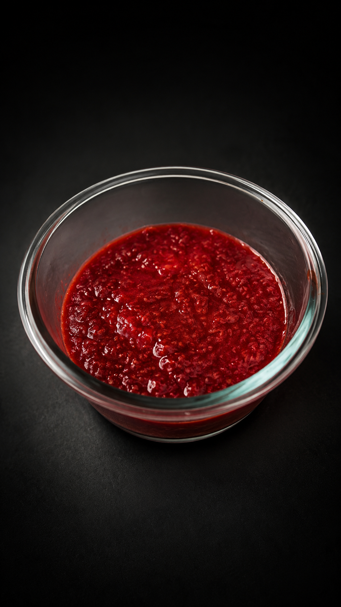

Bol protéiné vanille framboise

Version avec whey
Ingrédients
- 1 œuf
- 100 g de skyr 0%
- 100 g de compote de pommes
- 1 scoop de whey vanille
- 80 g de framboises
Préparation
- Mélanger l'œuf, le skyr 0%, la compote de pommes et la whey vanille jusqu'à obtenir une pâte homogène.
- Verser la préparation dans un plat.
- Cuire au four à 170°C pendant 20 à 25 minutes.
- Placer ensuite au frigo pendant au moins 3 heures.
- Avant de manger, écraser les framboises pour faire un coulis et le mettre dessus.
- Sortir la préparation du frigo et manger
Valeurs nutritionnelles (approx.)
Par portion : 362 kcal • 42 g protéines • 8 g lipides • 27 g glucides • 6 g fibres
Version sans whey
Ingrédients
- 1 œuf
- 100 g de skyr 0%
- 100 g de compote de pommes
- 80 g de framboises
Préparation
- Mélanger l'œuf, le skyr 0% et la compote de pommes jusqu'à obtenir une pâte homogène.
- Verser la préparation dans un plat.
- Cuire au four à 170°C pendant 20 à 25 minutes.
- Placer ensuite au frigo pendant au moins 3 heures.
- Avant de manger, écraser les framboises pour faire un coulis et le mettre dessus.
- Sortir la préparation du frigo et manger
Valeurs nutritionnelles (approx.)
Par portion : 247 kcal • 18 g protéines • 7 g lipides • 25 g glucides • 6 g fibres